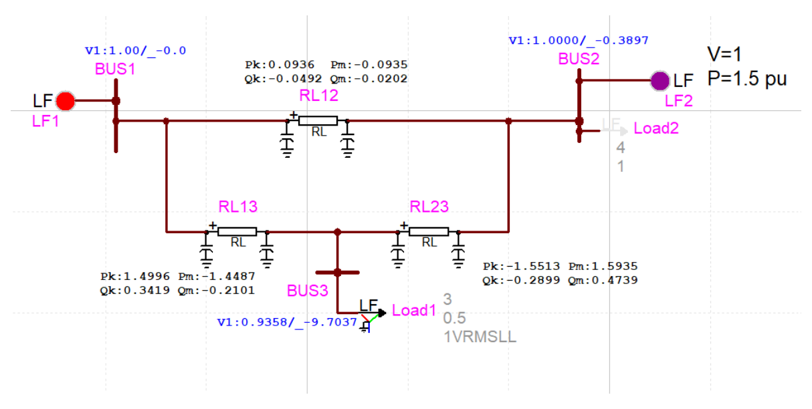
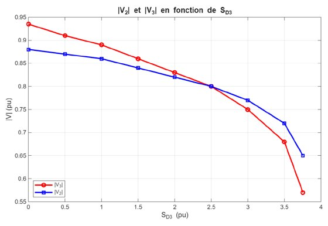
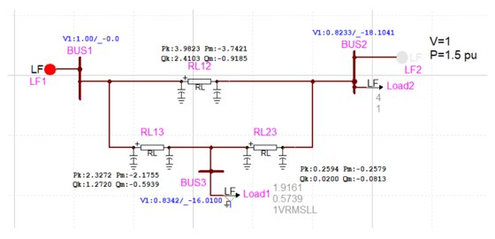
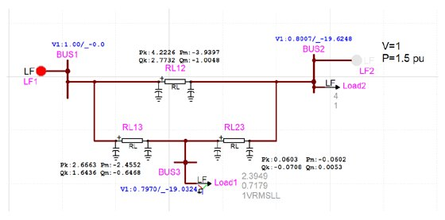

Power networks | Load flow
Three-bus power-flow analysis
Admittance modeling, numerical power flow and voltage behavior in a three-bus exercise.
- Status
- Network model
- Focus
- Energy
- Tools and methods
- Power systems / Load flow / Numerical analysis

Objective
Relate the bus-admittance model and nonlinear power equations to voltages and line power flows in an academic network.
Engineering work
- Form the network equations and identify the unknown states.
- Use a Jacobian-based iterative solution method.
- Compare saved schematic operating cases.
- Inspect the voltage trend as the load changes.
Outcome
The report preserves derivations, code listings, network figures and a voltage-versus-load plot. Selected figures show the structure of the analysis without publishing the marked cover or student identifier.
Scope and limits
The archived numerical calculations have not been independently checked. The figures are coursework evidence, not an operational network study or an endorsed design recommendation.
Archive gallery 3 items






Documentation
ELE8411 assignment report, selected schematics and saved voltage plot.